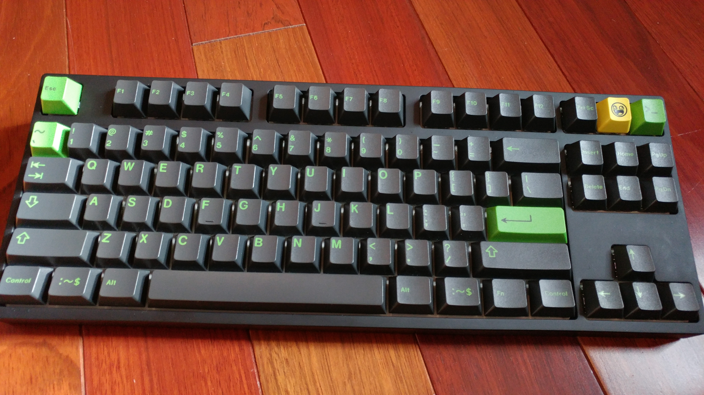

Keyboards
I like mechanical keyboards. Here are my keyboards (in order of newest received to oldest received):The SuperPad: A hand-wired numpad. It uses Gateron Brown switches.
Imgur: The SuperPad - My hand-wired numpad.MacroPad: No fancy name. A 4*4 macropad I built. It has G20 profile keycaps. I am using it as an input device for Musescore. It uses Kailh Speed Copper switches from NovelKeys.

Cooler Master Masterkeys Pro S RGB with GMK Terminal keycaps. My first good keyboard. Uses Cherry Brown switches.

MiniCom 4: Used back in the old days to let deaf people communicate through a phone. Uses Taiwan jet axis switches (I think).
One Key Keyboard: Exactly what it sounds like. Left: v1, which uses a Digispark and a switch. Center: v2, which uses a custom made PCB that goes on top of the Digispark. Right: the PCB I made. You can get it on OSH Park, just search "One Key Keyboard".
Hcman keyboard: I did a review on this. It was my first mechanical keyboard. It is very cheap. It uses "CK" blue switches.